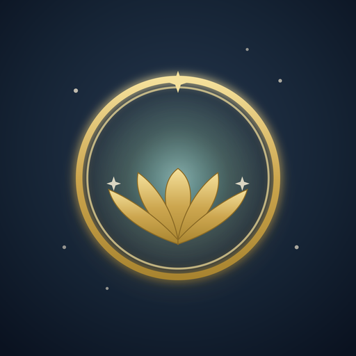
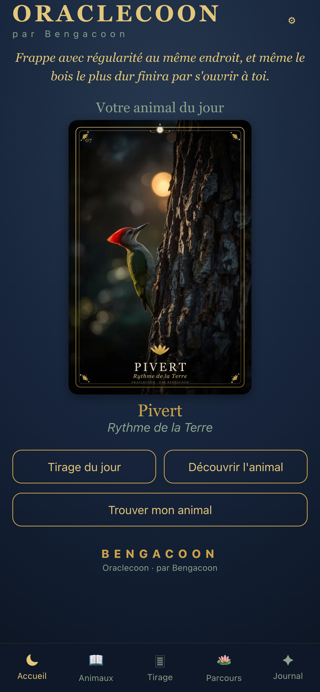
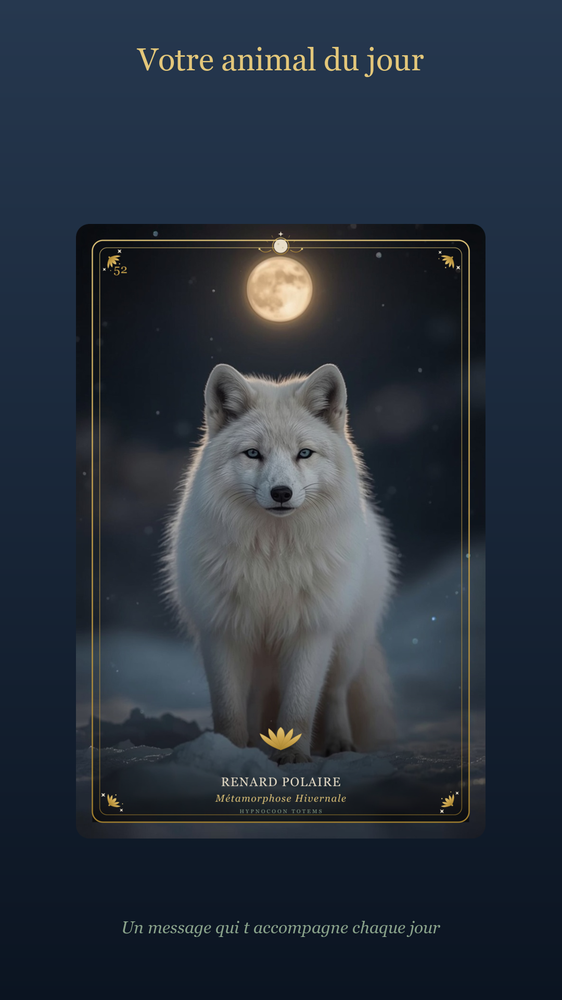
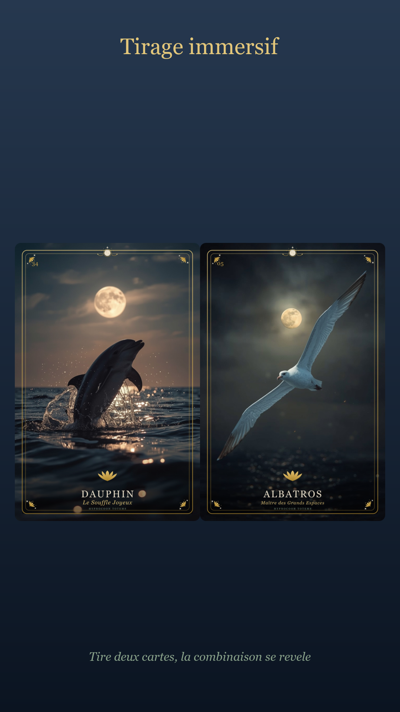
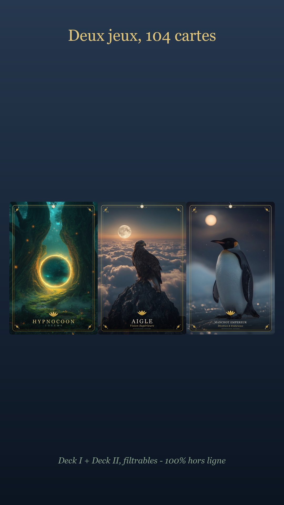

par Bengacoon
L'oracle des animaux totems. 104 cartes pour vous écouter, méditer et cheminer — un message animal à la fois.
Bientôt sur Google Play Application Android · 7,90 € (achat unique) · 100 % hors ligne · sans publicitéTout ce dont vous avez besoin pour un moment de calme et de guidance, dans une seule application apaisante.
Deux jeux d'animaux totems réunis, filtrables par deck ou explorés tous ensemble.
Éventail de cartes, mélange, retournement, et tirage double avec lecture de combinaison.
Signification, message-clé, qualités, défis, rituel et affirmations pour chaque animal.
Une inspiration quotidienne renouvelée pour démarrer la journée en conscience.
Avancez thème après thème, à votre rythme, pour approfondir votre cheminement.
Un questionnaire de découverte pour révéler l'animal qui vous ressemble.
Notez vos tirages, ressentis et synchronicités — tout reste sur votre appareil.
Un espace dédié pour accompagner vos séances et vos consultant·es.
Choisissez le jeu qui vous appelle, ou mêlez les deux pour des tirages plus riches.
Deck I
Le jeu fondateur : les grands esprits animaux et leurs messages essentiels pour vous guider au quotidien.
Deck II
Un jeu complémentaire qui enrichit votre bestiaire intérieur — dont le nouveau Renard Polaire.
104 cartes à explorer · filtre Deck I / Deck II / Tous
Une atmosphère forêt et clair de lune, dans des teintes bleu nuit, vert sauge, doré et améthyste.




Ouvrez l'application, respirez, tirez une carte. Sans compte, sans publicité, sans connexion.
Bientôt sur Google Play